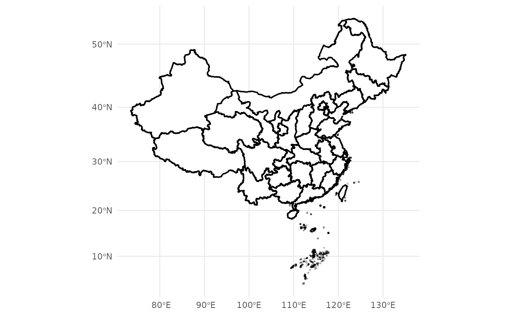
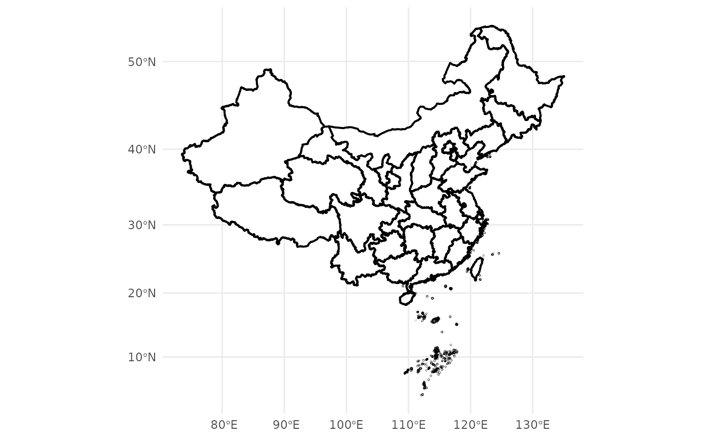

`geom_mapcn` provides a flexible interface for visualizing China's administrative boundaries. Users can select administrative levels (province, city, or county), apply custom projections, and filter specific regions.
Usage
geom_mapcn(
data = NULL,
admin_level = "province",
crs = "+proj=aeqd +lat_0=35 +lon_0=105 +ellps=WGS84 +units=m +no_defs",
color = "black",
fill = "white",
linewidth = 0.5,
filter_attribute = NULL,
filter = NULL,
...
)Arguments
- data
An `sf` object containing China's map data. If `NULL`, the function loads the package's default map. Users can select provincial, municipal, or county-level maps using the `admin_level` parameter.
- admin_level
A character string specifying the administrative level of the map. Options are `"province"` (default), `"city"`, or `"county"`. The corresponding `.rda` files (`China_sheng.rda`, `China_shi.rda`, `China_xian.rda`) must be located in the package's `extdata` folder.
- crs
A string specifying the Coordinate Reference System (CRS). Defaults to `"+proj=aeqd +lat_0=35 +lon_0=105 +ellps=WGS84 +units=m +no_defs"`. Users can specify other CRS strings (e.g., `"EPSG:4326"`).
- color
Border color. Default is `"black"`.
- fill
Fill color. Default is `"white"`.
- linewidth
Line width for borders. Default is `0.5`. Note: `linewidth` is used to control the border width in `ggplot2` version 3.3.0 or higher. Use `size` for earlier versions.
- filter_attribute
Column name for filtering regions (e.g., `"name_en"`).
- filter
A character vector of values to filter specific regions (e.g., `c("Beijing", "Shanghai")`).
- ...
Additional parameters passed to `geom_sf`.
Value
A `ggplot2` layer (of class `ggproto`) for visualizing China's administrative boundaries. This layer can be added to a `ggplot` object to generate maps with customizable projections, border colors, fill colors, and more.
Examples
# Plot provincial map (default)
ggplot() +
geom_mapcn() +
theme_minimal()
#> Warning: 'x' is NULL so the result will be NULL
 # Filter specific provinces
ggplot() +
geom_mapcn(filter_attribute = "name_en", filter = c("Beijing", "Shanghai"), fill = "red") +
theme_minimal()
# Use a Mercator projection
ggplot() +
geom_mapcn(crs = "+proj=merc", linewidth = 0.7) +
theme_minimal()
#> Warning: 'x' is NULL so the result will be NULL

# Filter specific provinces
ggplot() +
geom_mapcn(filter_attribute = "name_en", filter = c("Beijing", "Shanghai"), fill = "red") +
theme_minimal()
# Use a Mercator projection
ggplot() +
geom_mapcn(crs = "+proj=merc", linewidth = 0.7) +
theme_minimal()
#> Warning: 'x' is NULL so the result will be NULL
